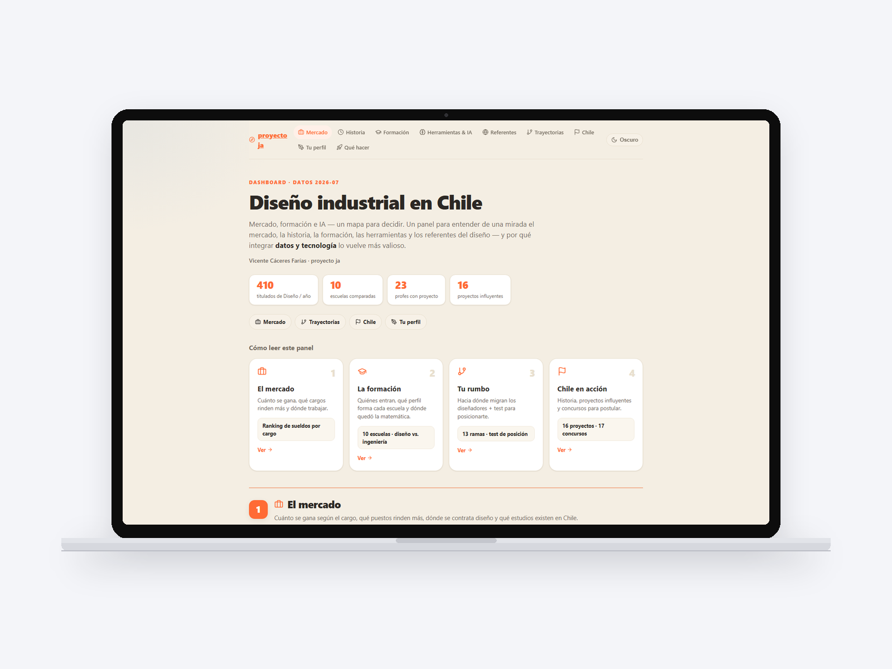
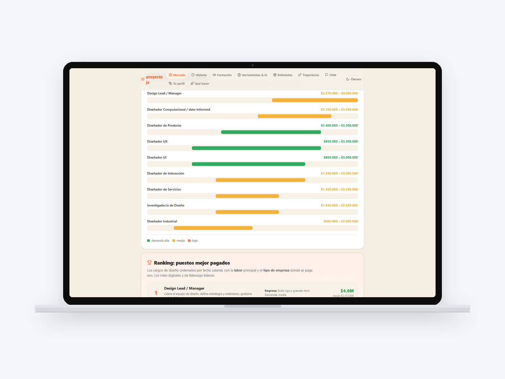
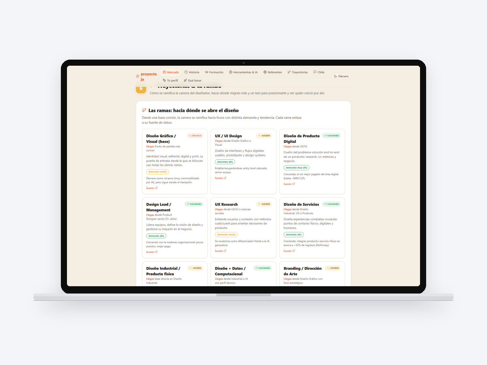
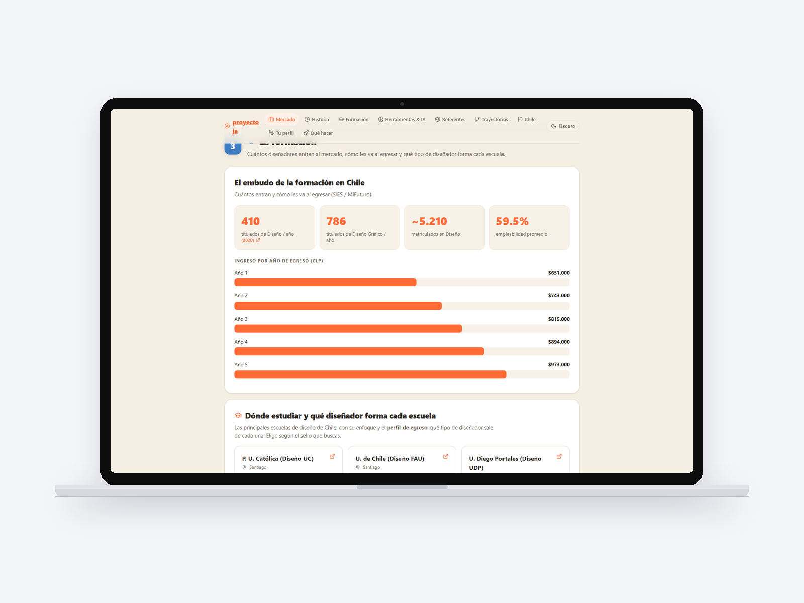

Personal project
Nine data pillars on the real state of industrial design in Chile, in a single dashboard.

A dashboard that gathers in nine pillars what can be known with data about industrial design in Chile: market and salaries by job title, history of the profession, education (ten schools compared, design versus engineering, where math went), tools and AI, references, career paths, open competitions, and two pillars that turn the exercise toward the reader: «your profile» and «what to do». 410 graduates a year, 23 professors with their own practice, 16 influential projects, 17 competitions.
What sets it apart from a report is the position test: thirteen branches of the profession to place yourself among, and from there the dashboard stops describing the market and starts answering where you stand. It compares salaries by job title with filters by demand, and shows where designers are moving.
It was not born as a portfolio project: it was born because I needed to decide my own career with data and not impressions. It is the basis for the decisions that came after: which graduate program to apply to, what positioning to hold, what services to offer. That it later works as a portfolio piece is a consequence.
It is the project with the most original code of the whole set and, at the same time, one that was never deployed. Technically it lacks nothing: it lacks the decision to publish it.


